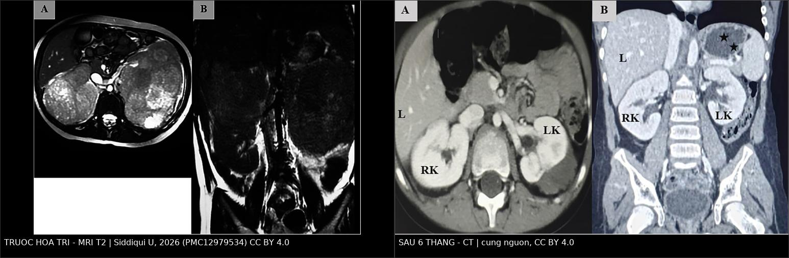
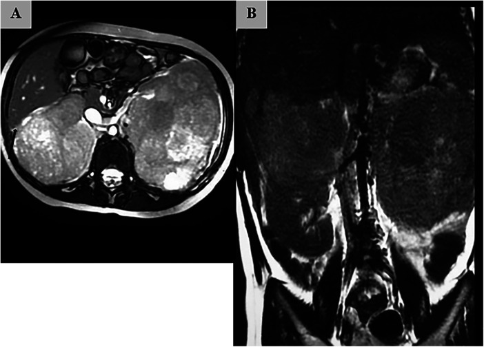
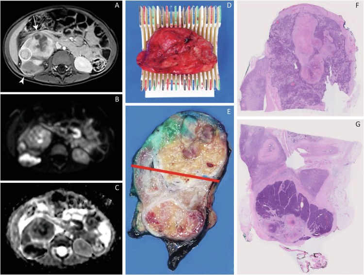

651 — Đánh giá đáp ứng & theo dõi sau điều trị u nguyên bào thận (Wilms tumor): thể tích, u sống vs hoại tử, tái phát muộn & di căn phổi / Wilms tumor response assessment and post-treatment surveillance
Tags: pattern:khoi-than pattern:dap-ung-hoa-tri pattern:u-song-sot vung:than vung:phoi score:SIOP-UMBRELLA protocol:MRI-DWI-theo-doi incidentaloma:di-can-phoi
Mức chắc chắn (certainty): tổng hợp y văn (literature synthesis) — số liệu từ đoàn hệ 60 bệnh nhi SIOP (Hamdan A et al., Diagnostics 2026, PMC13564508), nghiên cứu đối chiếu MRI-DWI với mô học qua khuôn cắt 3D in (van der Beek JN et al., Eur Radiol 2025, PMC11782413), ca song thận nguyên văn (Siddiqui U et al., Front Pediatr 2026, PMC12979534) và đoàn hệ tái phát 46 ca (Du J et al., Transl Androl Urol 2026, PMC12877638).
1. Tổng quan — vì sao "đọc khối còn lại" khó hơn "đọc khối ban đầu"
- Bối cảnh điều trị: u nguyên bào thận (Wilms tumor — WT) chiếm khoảng 6% ung thư trẻ em; thể khu trú có sống còn > 90%. Theo SIOP-RTSG UMBRELLA 2016, trẻ được hóa trị tân bổ trợ trước, mổ sau, rồi phân tầng nguy cơ dựa trên mô học sau hóa trị và thể tích khối u sau hóa trị.
- Ngưỡng định lượng quan trọng nhất: thể tích đo trên hình ảnh > 500 cm³ được xem là nguy cơ cao để lên kế hoạch điều trị bổ trợ, áp dụng cho nhóm mô học nguy cơ trung gian, không stromal, không epithelial (đã kiểm chứng trong SIOP 93-01 và SIOP 2001). Đây là ngưỡng của thể tích X-quang, không phải thể tích bệnh phẩm.
- Công thức chuẩn: thể tích ellipsoid V = π/6 × L × W × H (ba đường kính trực giao, cm). Đo trên cùng một thì (thường thì tĩnh mạch cửa sau hóa trị, ngay trước mổ), lát cắt mỏng, ghi rõ phương pháp.
- Số liệu đối chiếu 4 cách đo (60 bệnh nhi, Hamdan 2026):
- Thể tích ellipsoid trung vị 201 cm³ (16–1736); planimetry 232 cm³ (13–1952).
- Planimetry vs ellipsoid: r = 0,993; sai lệch trung bình +21,1 cm³ (+6,1%); giới hạn đồng thuận −82,8 đến +124,9 cm³; đồng thuận 100% ở ngưỡng 500 cm³ trong đoàn hệ này. Nhưng sai lệch 6% đủ để 480 cm³ thành ~509 cm³ — đúng ngưỡng đổi phân tầng.
- Thể tích bệnh phẩm vs ellipsoid: r = 0,594; sai lệch trung bình −119,5 cm³ (−34,1%); 47% ca được xếp nguy cơ cao bằng X-quang lại ≤ 500 cm³ theo bệnh phẩm. Một ca: X-quang 1736 cm³ nhưng bệnh phẩm 38 cm³ (khác > 97%) vì gần như chỉ còn hoại tử/nang.
- Cân bệnh phẩm tươi vs ellipsoid: r = 0,730; sai lệch +46,6% (kèm nhu mô thận, mỡ quanh thận, vỏ giả); nếu dùng cân sẽ nâng bậc sai 9,1% ca.
- TẠI SAO hình ảnh và mô học lệch nhau: hình ảnh đo khối u in vivo gồm cả vỏ giả, phù, dịch nang, hoại tử chưa hấp thu; bệnh phẩm đo mô đã cố định, co lại, có khi vỡ nang khi cắt. Vì vậy không được hoán đổi hai con số khi áp ngưỡng 500 cm³.
- TẠI SAO DWI phân biệt được u sống/hoại tử: vùng nguyên bào thận (blastema) có mật độ tế bào cao, màng tế bào cản trở chuyển động nước → ADC thấp; vùng hoại tử, xơ, nang, stromal giàu khoảng ngoại bào → ADC cao. Trên 44 tổn thương WT (van der Beek 2025): ADC trung vị trên tiêu bản khớp vị trí là 1,516 (stromal), 0,906 (epithelial) và 0,573 × 10⁻³ mm²/s (blastemal); ngưỡng 1,195 × 10⁻³ mm²/s phân biệt stromal với epithelial/blastemal đạt độ nhạy 95,2%, độ đặc hiệu 90,5%. Blastemal có ADC toàn khối thấp nhất cả trước (0,600) và sau hóa trị (0,628 × 10⁻³ mm²/s).
- TẠI SAO thể tích giảm khác nhau theo thể mô học: stromal WT giảm trung vị chỉ 48 cm³ (có ca tăng 333 cm³), trong khi thể "regressive" giảm 335 cm³ (82–1067). Đáp ứng kém không đồng nghĩa u còn sống — stromal trưởng thành là mô lành tính hóa, không phải blastema.
- Vì sao phải theo dõi dài: tái phát gặp ở 16,2% (51/314) trong đoàn hệ Bắc Kinh; trung vị 6,1 tháng (0,1–52,1), 95,7% trong 24 tháng; 91,3% tái phát không triệu chứng, phát hiện nhờ chụp định kỳ. Sau tái phát: EFS 5 năm 44,5%, OS 5 năm 54,7%; tái phát < 6 tháng có EFS 24,9% so với 66,8% (HR tái phát lần hai 3,0).
2. Mẫu hình + chẩn đoán phân biệt của "khối còn lại sau hóa trị" (Gamut)
- Đáp ứng hoàn toàn: không còn khối đo được, chỉ còn sẹo nhỏ; mô học có thể chỉ là xơ/hoại tử — không cần can thiệp thêm nếu đúng phác đồ.
- Khối hoại tử/nang hóa: khối lớn nhưng không ngấm thuốc, thành mỏng, ADC cao; đây là hình ảnh hay gặp nhất và không phải u sống.
- U sống còn (viable/blastemal): nốt đặc ngấm thuốc, thường nằm trong hoặc sát vỏ khối hoại tử; ADC thấp (< 1,195 × 10⁻³ mm²/s); có thể tăng thể tích giữa hai lần chụp.
- Trưởng thành stromal (stromal maturation): khối không nhỏ đi hoặc to lên, bờ rõ, ADC cao, ngấm thuốc ít; mô học là stroma trưởng thành, không phải blastema — đây là "giả tiến triển" điển hình sau hóa trị.
- Tái phát/tái tăng sinh tại chỗ: khối mới hoặc lớn lại ở giường mổ/hố thận, có thể kèm TP53/anaplasia; cần so phim cũ và đo lại thể tích.
- Nephroblastomatosis/ổ nguyên bào thận mới: nhiều nốt nhỏ vỏ thận, không có khối thống trị; gặp ở thận đối bên hoặc thận còn lại, không phải di căn.
- Tổn thương giả u ở gan: tăng sản nốt khu trú (FNH) ở trẻ sau điều trị WT có thể to dần và giống di căn gan; FNH chiếm ~2% u gan trẻ em (Miyoshino W et al., Surg Case Rep 2026, PMC13148888) — không sinh thiết mù.
- Mẫu hình di căn: phổi là vị trí xa thường gặp nhất; sau đó gan, xương, não (não hiếm, thường muộn). Di căn kết hợp tại chỗ + xa có tiên lượng xấu nhất (OS 5 năm 12% trong đoàn hệ tái phát).
3. Bảng so sánh phân biệt (ma trận đối chiếu)
| Thực thể (entity) | Hình ảnh điển hình (MRI/CT sau hóa trị) | Chốt vào (rule-in) | Chốt loại (rule-out) | Gợi ý xác nhận |
|---|---|---|---|---|
| U sống còn (blastemal) | Nốt đặc ngấm thuốc, T2 trung gian, DWI sáng/ADC thấp | ADC < 1,195 × 10⁻³ mm²/s + ngấm thuốc + tăng thể tích giữa 2 lần chụp | ADC cao đồng nhất + không ngấm + vôi hóa/xơ → không phải u sống | Đối chiếu mô bệnh sau mổ; cắt toàn bộ để lấy bờ |
| Hoại tử/nang sau hóa trị | Khối lớn, không ngấm, thành mỏng, dịch T2 rất sáng | Không ngấm thuốc + ADC cao + thể tích giảm | Nốt đặc ngấm thuốc trong khối → phải loại u sống | MRI T1 sau tiêm + trừ vùng không ngấm khi đo ADC |
| Trưởng thành stromal | Khối bờ rõ, không nhỏ đi, ngấm ít, ADC cao | Stromal ADC 1,516 (cao hơn epithelial/blastemal) + giảm thể tích < 48 cm³ | ADC thấp + ngấm mạnh → nghĩ blastema | Mô học là tiêu chuẩn vàng; không tăng điều trị chỉ vì "không nhỏ" |
| Tái phát tại chỗ | Khối mới/lớn lại ở giường mổ, có thể xâm lấn cơ/cột sống | So phim cũ thấy mới xuất hiện + tăng thể tích + ngấm thuốc | Sẹo xơ co kéo, không ngấm, ổn định ≥ 2 lần chụp | CT/MRI bụng + sinh thiết nếu mổ được |
| Nephroblastomatosis | Nhiều nốt vỏ < 1–2 cm, không khối thống trị, ngấm kém | Nhiều nốt hai bên + bối cảnh hội chứng dễ mắc | Một khối thống trị ngấm mạnh → nghĩ WT | US/MRI 3 tháng; theo dõi, tránh sinh thiết |
| FNH ở gan (giả di căn) | Nốt gan ngấm mạnh thì động mạch, có thể có vòng xơ trung tâm, to dần chậm | Bối cảnh WT đã lui bệnh + nốt gan đơn độc, ngấm kiểu FNH | Nốt gan đa ổ + tăng nhanh + bờ không đều → nghĩ di căn | MRI gan đa thì; theo dõi 3–6 tháng; tránh sinh thiết mù |
| Di căn phổi | Nốt tròn, bờ rõ, thường ngoại vi/thùy dưới, có thể đơn độc | Nốt mới trên CT ngực + tiền sử WT + không có ổ nhiễm | Vôi hóa đều, bờ tua gai, ổn định nhiều năm → lành tính | CT ngực lát mỏng; cắt nốt nếu đơn độc và mổ được |

Trái — MRI T2 trước hóa trị: hai thận thay thế bởi khối lớn, bên phải xóa mặt phẳng mỡ với gan (mũi tên). Phải — CT sau 6 tháng hóa trị: khối giảm mạnh, mặt phẳng mỡ gan–thận phải được phục hồi; còn khối nang phức tạp ở cực trên thận trái (dấu sao). Siddiqui U et al., Front Pediatr 2026 (PMC12979534, Fig. 1–2), CC BY 4.0; ảnh ghép letterbox, không crop.4. Protocol chụp + hệ phân độ/điểm chuẩn hóa
4.1. Chụp và đo thể tích
- MRI bụng (ưu tiên ở trẻ nhỏ/đang điều trị): T2 axial/coronal, T1 trước và sau gadolinium, DWI b = 0/1000 + ADC. Lát cắt ≤ 5 mm, không khoảng trống.
- CT bụng có cản quang khi MRI không khả dụng: thì tĩnh mạch cửa (60–70 giây) để đo thể tích; thì động mạch để tìm nốt sống.
- Đo thể tích: ellipsoid V = π/6 × L × W × H trên ba mặt phẳng trực giao, cùng một thì; ghi rõ "ellipsoid" hay "planimetry" trong báo cáo. Không dùng cân bệnh phẩm thay thể tích.
- Đo ADC: đặt ROI toàn khối, sau đó trừ vùng không ngấm thuốc (nang/hoại tử/xuất huyết) theo ngưỡng cơ dựng sống; báo cáo ADC trung vị × 10⁻³ mm²/s. Với tổn thương < 3 cm³ hoặc phần lớn là nang/xuất huyết, ADC không đáng tin.
- CT ngực liều thấp (hoặc X-quang ngực) ở chẩn đoán và khi nghi di căn; không bỏ sót nốt < 5 mm bằng cách đọc trên lát 1–2 mm.
4.2. Phân tầng SIOP và ngưỡng xử trí
- Stage V = WT hai thận tại chẩn đoán; mục tiêu kép: kiểm soát u + bảo tồn nhu mô thận. Hóa trị tân bổ trợ thường 6–12 tuần trước mổ bảo tồn.
- Nguy cơ cao sau hóa trị: mô học blastemal (hoặc anaplasia) và/hoặc thể tích > 500 cm³ trong nhóm trung gian không stromal/không epithelial → xem xét tăng điều trị (doxorubicin, xạ trị theo phác đồ).
- Nguy cơ thấp/trung gian: phẫu thuật ± hóa trị ít độc; tránh tăng bậc chỉ vì khối "không nhỏ" nếu ADC cao và mô học stromal.
flowchart TD
A[Khối thận sau hóa trị tân bổ trợ] --> B[Đo thể tích ellipsoid trên MRI hoặc CT]
B --> C{Thể tích > 500 cm3?}
C -->|Có| D[Nhóm nguy cơ cao - xem xét tăng điều trị]
C -->|Không| E[Nhóm trung gian hoặc thấp]
A --> F{Có nốt đặc ngấm thuốc?}
F -->|Có| G[Đo ADC vùng đặc]
G --> H{ADC < 1,195 x 10-3 mm2/s?}
H -->|Có| I[Nghĩ blastema sống - cắt bờ rộng]
H -->|Không| J[Nghĩ stromal hoặc xơ - theo dõi]
F -->|Không| K[Hoại tử hoặc nang - ADC cao - không phải u sống]
I --> L[Đối chiếu mô bệnh sau mổ]
J --> L
K --> L
4.3. Lịch theo dõi sau điều trị
- 2 năm đầu: khám + siêu âm bụng + X-quang/CT ngực mỗi 3 tháng.
- 3 năm tiếp: mỗi 6 tháng.
- Sau 5 năm: mỗi năm (tái phát muộn vẫn có thể gặp, dù 95,7% xảy ra trong 24 tháng).
- Tái phát: chụp lại toàn bộ (bụng + ngực), sinh thiết/cắt nốt nếu còn mổ được; tái phát < 6 tháng và không mổ được là yếu tố tiên lượng xấu độc lập.
5. Biến thể bình thường và cạm bẫy
- Đừng dùng thể tích bệnh phẩm để áp ngưỡng 500 cm³: bệnh phẩm thấp hơn X-quang trung bình 119,5 cm³ và làm 47% ca nguy cơ cao thành "không nguy cơ cao" — sai lệch hệ thống, không phải sai số ngẫu nhiên.
- Đừng dùng cân bệnh phẩm: cân gồm nhu mô lành, mỡ, vỏ giả; sai lệch +46,6%, có ca cân 3250 g trong khi thể tích X-quang 1085 cm³.
- ROI ADC sai: lấy cả vùng hoại tử/nang sẽ kéo ADC lên và bỏ sót blastema; ngược lại, xuất huyết đông đặc có thể làm ADC thấp giả — luôn đối chiếu T1/T2 và ảnh sau tiêm.
- "Khối to lên" không đồng nghĩa thất bại: stromal maturation có thể tăng thể tích nhưng ADC cao, mô học lành; tăng điều trị oan sẽ thêm độc tính.
- FNH gan sau WT: nốt gan ngấm mạnh, to dần ở trẻ đã lui bệnh có thể là FNH, không phải di căn; sinh thiết mù có nguy cơ chảy máu. Theo dõi bằng MRI đa thì trước.
- Di căn phổi đơn độc: không phải mọi nốt phổi mới là di căn — loại trừ nốt viêm/lao cũ/atelectasis; nhưng ở trẻ WT, nốt mới phải loại trừ di căn bằng CT lát mỏng và theo dõi ngắn.
- Bỏ sót ổ thứ hai: WT hai thận và hội chứng dễ mắc có thể có ổ nguyên bào thận đối bên; đọc cả hai thận trên mọi lát, không chỉ "khối chính".
- Tái phát muộn sau 5 năm: hiếm nhưng có; không ngừng theo dõi hoàn toàn ở bệnh nhi có hội chứng dễ mắc hoặc bảo tồn thận.
6. Tự lượng giá — Blind Quiz
Ca 1 — Bé gái 5 tuổi, bụng to dần, hai bên hông sờ thấy khối rắn. Xem hai ảnh trước và sau hóa trị.

- Gợi ý: không đau, không sốt, không di căn phổi trên CT ngực.
- Câu hỏi: Mô tả hai khối và mối liên quan với gan? Sau 6 tháng hóa trị, dấu hiệu nào chứng tỏ đáp ứng? Còn khối gì ở thận trái?
Bấm để hiện đáp án (findings + chẩn đoán)
- Trước hóa trị (A axial, B coronal T2): hai khối lớn thay thế nhu mô hai thận; khối phải ~10 × 8 cm ở cực trên, xóa mặt phẳng mỡ với mặt sau gan (mũi tên) — gợi ý dính vỏ gan; khối trái cũng rất lớn. Chẩn đoán: WT song thận (stage V) theo SIOP, không sinh thiết trước hóa trị.
- Sau 6 tháng (ảnh ghép, phải): khối giảm mạnh, mặt phẳng mỡ gan–thận phải được phục hồi, thận phải còn nhu mô; thận trái còn khối nang phức tạp cực trên (dấu sao) — phần lớn là hoại tử/nang, không phải u sống.
- Chốt: thể tích giảm + không còn nốt đặc ngấm mạnh = đáp ứng tốt; nhưng ca này sau đó tái tăng sinh trước mổ, phải mổ bảo tồn hai bên. Bài học: đáp ứng ban đầu không bảo đảm đáp ứng bền — phải chụp lại ngay trước mổ.
- Nguồn: Siddiqui U et al., Front Pediatr 2026 (PMC12979534, Fig. 1–2), CC BY 4.0.
Ca 2 — Bé trai 3 tuổi, WT sau hóa trị tân bổ trợ; MRI còn nốt đặc trong khối. Ảnh dưới gồm MRI, tiêu bản cắt ngang và mô học.

- Gợi ý: khối đã nhỏ hơn nhưng còn nốt ngấm thuốc ở vỏ.
- Câu hỏi: Nốt còn lại là u sống hay hoại tử? Dùng trình tự nào để chốt? Ngưỡng ADC nào gợi ý stromal?
Bấm để hiện đáp án (findings + chẩn đoán)
- Findings: (A) T1 sau tiêm: nốt ngấm thuốc ở vỏ; (B) DWI: nốt tăng tín hiệu; (C) ADC: nốt giảm tín hiệu — tương ứng vùng blastema sống. Tiêu bản đại thể (D, E) và mô học (F, G) cho thấy vùng u đặc còn sống cạnh vùng hoại tử/xơ.
- Chốt: DWI/ADC là chốt bổ sung cho nốt đặc sau hóa trị. ADC trung vị: blastemal 0,573, epithelial 0,906, stromal 1,516 × 10⁻³ mm²/s; ngưỡng 1,195 phân biệt stromal với phần còn lại (sens 95,2%, spec 90,5%).
- Cạm bẫy: không đo ADC trên vùng nang/xuất huyết; vùng xuất huyết đông có thể ADC thấp giả.
- Nguồn: van der Beek JN et al., Eur Radiol 2025 (PMC11782413, Fig. 2), CC BY 4.0.
Ca 3 — Bé trai 4 tuổi, đã mổ WT 18 tháng trước, khám định kỳ hoàn toàn khỏe. CT ngực phát hiện một nốt 8 mm ở thùy dưới phổi phải.
- Câu hỏi: Đây có thể là gì? Vì sao vẫn phải chụp định kỳ dù trẻ không triệu chứng? Bước tiếp theo?
Bấm để hiện đáp án (findings + chẩn đoán)
- Chẩn đoán nghĩ nhiều: di căn phổi — vị trí xa thường gặp nhất của WT. Trong đoàn hệ 46 ca tái phát, 91,3% không triệu chứng, phát hiện nhờ chụp định kỳ; 95,7% tái phát trong 24 tháng, trung vị 6,1 tháng.
- Vì sao không được bỏ: tái phát < 6 tháng có EFS 5 năm 24,9% và OS 35,8%, xấu hơn rõ so với tái phát muộn (66,8% và 73,4%). OS sau tái phát chung chỉ 54,7%.
- Bước tiếp theo: CT ngực lát mỏng (1–2 mm) để đếm nốt và vị trí; đánh giá lại bụng; nếu nốt đơn độc/còn mổ được → cắt nốt/thuỷ thuật để chẩn đoán mô học; hội chẩn phác đồ cứu vãn.
- Nguồn số liệu: Du J et al., Transl Androl Urol 2026 (PMC12877638), CC BY-NC-ND 4.0.
Bài liên quan chéo
- 639 – Khối thận ở trẻ: Wilms, CMN, RCC
- 648 – Hội chứng dễ mắc Wilms & nephroblastomatosis
- 647 – CMN thể tế bào: theo dõi tái phát
- 650 – Thần kinh nhi: xuất huyết mầm & u hố sau (nguyên tắc theo dõi sau điều trị ung thư nhi)
- 020 – Nốt phổi (đánh giá nốt phổi trên CT)
Không dùng để chẩn đoán độc lập khi chưa có người hướng dẫn.